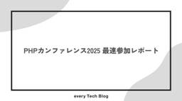
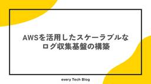
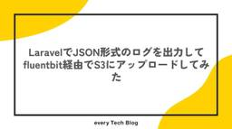
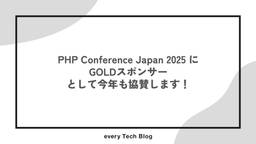

every Tech Blog
https://tech.every.tv/
株式会社エブリーのTech Blogです。
フィード

PHPカンファレンス2025 最速参加レポート
every Tech Blog
去年に引き続き、エブリーは2025年6月28日（土）に大田区産業プラザPiOで開催されたPHPカンファレンス2025に参加させていただきました。 今回も参加レポートとして、会場の様子やセッションの感想についてお届けします！ イベント概要 https://phpcon.php.gr.jp/2025/ PHPカンファレンスは、PHP関連の技術を主とした技術者カンファレンスです。 2000年に日本のユーザ会によってPHPカンファレンスが初めて行われ、今年で26回目の開催となります。 これからPHPをはじめる方から、さらにPHPを極めていきたい方まで幅広く楽しめるイベントになるよう様々なプログラムをご…
2日前

AWSを活用したスケーラブルなログ収集基盤の構築
every Tech Blog
はじめに こんにちは。 開発本部 開発1部 デリッシュリサーチチームでデータエンジニアをしている吉田です。 エブリーではサイネージ端末を利用した広告配信サービスを提供しており、サイネージ端末からのログを収集しています。 従来はTreasureData-SDKを利用して端末からTreasureData上のテーブルにログを送信していましたが、ログ収集基盤を移行することになりました。 今回、AWSのマネージドサービスを活用して、スケーラブルなログ収集基盤を構築したので、その内容を紹介します。 背景 従来のログ収集基盤では、TreasureData-SDKを利用して端末からTreasureData上の…
4日前

LaravelでJSON形式のログを出力してfluentbit経由でS3にアップロードしてみた
every Tech Blog
はじめに こんにちは、エブリーでサーバーサイドをメインに担当している清水です。 私のチームではPHP, Laravelを使用して小売店向けのSaaS型Webサービスの開発を行っています。インフラはAmazon ECS (Fargate)です。 このシステムではユーザーのアクションを分析するためのイベントログを出力する機能があり、こちらをAmazon S3に出力するためにfluentbitを使用することにしました。 当初の予定では1日程度で終わるはず思っていたのですが、思った以上にうまくいかず1週間ほどかかってしまいました。 本記事では、Laravel → 標準出力 → Fluent Bit →…
5日前

PHP Conference Japan 2025 にGOLDスポンサーとして今年も協賛します！
every Tech Blog
PHP Conference Japan 2025 にGOLDスポンサーとして今年も協賛します！
7日前

OpenAPI における null 値の表現の仕方
every Tech Blog
こんにちは、@きょーです！普段はデリッシュキッチン開発部のバックエンド中心で業務をしています。 はじめに OpenAPI で API 仕様書を書く際、null 値を許容するプロパティの表現方法はバージョンによって異なります。たとえば、ユーザープロフィールのメールアドレスのように「値が存在しない（null）」を許容したいケースはよくありますが、その書き方や推奨される方法は OpenAPI のバージョンごとに変化してきました。 この記事では、OpenAPI 3.0.0 と 3.1.0 それぞれでの null 許容プロパティの書き方や、その背景、なぜ仕様が変わったのか、どちらを使うべきかについて解説…
11日前
MySQL のテーブル構成を Liam ERD で可視化してみた
every Tech Blog
目次 はじめに Liam ERD とは 主な特徴 サポート状況 導入 手順 1. Liam ERD のビルドをさせるための Dockerfile を用意する 2. Docker Compose ファイルを用意する 3. テーブル構成を出力するためのコマンドを用意する 4. テーブル構成を出力する 使い勝手 まとめ 最後に はじめに こんにちは、開発本部開発1部トモニテグループのエンジニアの rymiyamoto です。 プロダクトを開発していると、DB のテーブルは常に変化していきます。 そのため、テーブルの構成を可視化することで、テーブルの関係性を把握することができるので設計や開発の効率化に…
13日前
Dev Containerを使ってみる
every Tech Blog
はじめに エブリーでデリッシュキッチンの開発をしている本丸です。 4月に新卒の開発研修を行ったのですが、配属されたチームが異なることなどもあり開発環境が揃っていないという問題がありました。 anyenvやgoenvなどを設定してもらうという手もあったのですが、それ自体の設定にも手間がかかってしまうためDev Containerの設定を用意してその場は乗り切りました。 本記事では、Dev Containerの基本的な使い方から、Docker Composeとの連携、拡張機能の設定まで、実際の開発現場で役立つ知識をお届けできればと思っています。 Dev Containerとは Dev Contai…
20日前
クロスクラウド環境で AWS SSM を利用して SSH の開放範囲を絞る
every Tech Blog
エブリーで小売業界向き合いの開発を行っている @kosukeohmura です。 エブリーでは全社的に SSH を使ったサーバーへのログインから、AWS Systems Manager Session Manager ( 以下 Session Manager ) を使った運用に切り替えました。 tech.every.tv これは私達のチームで管理している他社クラウド (AWS 以外という意味で他社です) 上に存在するサーバについても対象ですが、Session Manager を直接利用することはできません。そこで Session Manager を使った SSH 踏み台サーバーを構築し、それ経…
25日前
人工知能学会(JSAI2025)に参加しました
every Tech Blog
はじめに こんにちは。デリッシュキッチンでデータサイエンティストをしている古濵です。 2025年5月27日〜30日に開催された第39回人工知能学会全国大会(JSAI2025)に、プラチナスポンサーとして協賛いたしました。 今年は史上最多の参加者数を更新したようで、学会としての盛り上がりを肌で感じることができました。 tech.every.tv エブリーとしても人工知能学会への参加は今回が初めてでした。 本記事では、スポンサーブースでのエブリーのAIプロダクト開発に関する紹介や、聴講した講演等についてまとめていきたいと思います。 スポンサーブース 弊社のスポンサーブースでは「AIエージェントによ…
1ヶ月前
トモニテで発生した SQL インジェクション攻撃の記録と教訓
every Tech Blog
はじめに こんにちは、トモニテで開発を担当している吉田です。 サービスを運営する上で、セキュリティ対策は欠かせません。 本記事では、実際にトモニテが受けた攻撃の事例をもとに、 異常検知から調査の経緯、攻撃の詳細、そして発見された問題点や今後の対応についてまとめています。 セキュリティリスク 現代の Web サービスにおいて、セキュリティリスクは多岐にわたります。代表的なものとしては、クロスサイトスクリプティング（XSS）、クロスサイトリクエストフォージェリ（CSRF）、ブルートフォース攻撃などが挙げられます。これらのリスクは、サービスの信頼性やユーザーの安全を脅かす重大な問題となり得ます。 中…
1ヶ月前
Laravel開発で注意したい Eloquentの落とし穴と正しい使い方
every Tech Blog
はじめに こんにちは、リテールハブ開発部でバックエンドエンジニアをしているホシと言います。 現在、小売アプリの開発でLaravel11を利用してAPI開発を行っています。 今回はとても便利で、開発効率を大きく上げてくれるツール「LaravelのEloquent ORM」についてお話できればと思います。 ただ、Eloquentに限った話ではなくORM全体の話でもあるのですが、使い方を間違えるとパフォーマンス低下や予期しないバグを引き起こすこともあります。 実際に使用してみて、便利さの裏にある注意点や、SQLの知識・理解が非常に重要であることを実感したので、今回はその点についてお話しできればと思い…
1ヶ月前
TSKaigi 2025 に参加してきました！
every Tech Blog
2025年5月23日(金)、24日(土)の2日間に渡って開催されたTSKaigi 2025に参加してきましたので、イベントの様子や印象に残ったセッションをいくつかご紹介します。
1ヶ月前
TestFlightアプリでSandbox課金テストを行う方法
every Tech Blog
はじめに こんにちは、デリッシュキッチン開発部でソフトウェアエンジニアをしている新谷です。 新卒で入社してから早1年が経ち、時の流れの速さを感じています。 今回は、アプリ課金システムにおけるサーバー側のテスト方法についてご紹介します。 最近、デリッシュキッチンとヘルシカにおけるアプリ課金システムのサーバー側の修正を行いました。 その際、テスト方法に苦戦したので、その内容をまとめたいと思います。 アプリ課金システムの概要 デリッシュキッチンとヘルシカでは、iOSとAndroidの両方でアプリ課金ができますが、今回はiOSの課金についてのご紹介です。 そもそもアプリ課金には、以下の2種類があります…
1ヶ月前
AWS ALBのIPアドレスを固定するには
every Tech Blog
概要 TIMELINE開発部の内原です。 今回はAWS ALBに対するリクエスト時、送信先となるIPアドレスを固定する方法について調査しましたのでその共有です。そこまで一般的な要件ではない気はしますが、参考になれば幸いです。 背景 とある環境において、ALBに対する送信元側がIPアドレスのホワイトリスト形式で通信を許可する構成になっているため前述の要件を満たす必要がありました。 ただ、AWSのALBはIPアドレスが固定されておらず、状況によって変動するという仕様になっています。このため、DNSでALBを指定するにはALB DNS名をCNAMEで指定するか、Route53のAlias機能を用いて…
1ヶ月前
JSAI2025 (2025 年度 人工知能学会全国大会) にプラチナスポンサーとして協賛します！
every Tech Blog
目次 はじめに JSAI とは？ エブリーにおける AI 利用に関する取り組み イベント当日について 最後に はじめに こんにちは、トモニテ開発部ソフトウェアエンジニア兼、CTO 室 Dev Enable グループの rymiyamoto です。 この度、株式会社エブリーは、2025 年 5 月 27 日(火)から 30 日(金)に開催される「JSAI2025 (2025 年度 人工知能学会全国大会)」に、プラチナスポンサーとして協賛することになりました！ www.ai-gakkai.or.jp (2025/06/04追記) 参加レポートはこちら tech.every.tv JSAI とは？ …
1ヶ月前
レシピ材料の同義語辞書自動化に挑戦 with LLM
every Tech Blog
開発本部のデータ&AIチームでデータサイエンティストをしている古濵です。 今回は、挑戦WEEKで実装した「レシピ材料の同義語辞書自動化」をLLMで実装した内容をまとめます。 挑戦WEEKに関しては、以下の記事をご覧ください。 tech.every.tv 背景 ユーザーのクエリによって、同じ意味を表す言葉でも異なる単語が使われることがあります。 デリッシュキッチンを題材に例を挙げると「鶏もも肉」「とりもも肉」「鳥もも肉」などです。 これらの単語同士を同義語（シノニム）、これらの同義語を対応づけたものを同義語辞書と呼びます。 デリッシュキッチンの検索機能では同義語辞書を人手で作成して対応しています…
1ヶ月前
2025年新卒エンジニア研修を実施しました！
every Tech Blog
こんにちは。トモニテ開発部ソフトウェアエンジニア兼、CTO室Dev Enableグループの庄司です。本記事では、2024年度から実施を始め、第2回目となる2025年新卒エンジニア向け研修の取り組みについてご紹介します。
2ヶ月前
デリッシュキッチンの Android アプリの起動時間を半分にした話
every Tech Blog
はじめに こんにちは、デリッシュキッチンでクライアントエンジニアを担当している kikuchi です。 デリッシュキッチンの Android アプリ開発チームでは新規機能の開発だけでなく、日々アプリの改善のために不具合の修正や挙動の改善についても力を入れており、アプリのパフォーマンスの部分など細かい部分も数値が改善されているかシビアに計測データで確認しています。 今回はそのパフォーマンスの部分で 「アプリの起動時間の改善」 の観点で特に効果が高かった対応をまとめてみたいと思います。 アプリの起動時間を確認する方法 アプリ起動時間は以下で調べることが出来ます。 Google Play Conso…
2ヶ月前
Cursor Custom modes を利用した cursor-memory-bank のワークフローを試してみる
every Tech Blog
はじめに こんにちは。リテールハブ開発部の池です。 エブリーは 2025/05/02 にプレスリリースを出した通り Cursor を全エンジニアとプロダクトマネージャーに導入し、AI活用による生産性の向上に積極的に取り組んでいます。 corp.every.tv 現在、世の中では Cursor のような開発支援ツールを使ってLLMをベースとしたエージェントの開発ワークフローを構築する動きが進んでいます。 エージェントに安定した挙動をさせるには、一貫したコンテキストの提供が必要であり、永続的なルールやファイルを用いてその振る舞いを制御するアプローチが一般的になりつつあります。 これには単なるドキュ…
2ヶ月前
Amazon CloudWatch Logs Insights を使ったログ調査〜最新機能を添えて
every Tech Blog
Amazon CloudWatch Logs Insights を使ったログ調査〜2025最新機能を添えて
2ヶ月前
Amazon QuickSightでハイライトできるランキング表を作成する
every Tech Blog
はじめに こんにちは、開発本部のデータ＆AIチームの蜜澤です。 Amazon QuickSight(以下quicksight)にはハイライト機能がありますが、インタラクティブにランキング表の指定したワードにハイライトすることはできません。 本記事ではquicksightのハイライト機能を使用せずに、ランキング表の同じワードにハイライトする方法を紹介したいと思います。 本記事はquicksightの機能を一通り知っている方向けの内容になっています。 使用するデータ 今回使用するデータは、レシピ動画サービスの検索データを集計して作成した「にんじんと一緒に検索された回数が多いワードの年度ごと(202…
2ヶ月前
ADR始めました
every Tech Blog
はじめに 背景 ADRについて ADRの始め方 ADRの実践例 ADRの具体例 おわりに はじめに デリッシュキッチンのiOSアプリ開発を担当している池田です。今回はiOSチームでADR（Architecture Decision Record）を用いてチームの意思決定の記録を残し始めた話をします。正確には個人でADRを記録していたものの、チームでの運用はしていなかったため、この機会にチームでの管理を開始しました。 背景 デリッシュキッチンのiOS開発は当初少人数で行っていたため、実装に関する詳細なドキュメントを作成するという習慣がありませんでした。しかし近年、メンバーの入れ替わりや新入社員の…
2ヶ月前
CursorとFigma-Context-MCPを使ってLPの開発効率を上げる
every Tech Blog
はじめに こんにちは。デリッシュキッチン開発部の村上です。 弊社ではエンジニアとPdM全員にCursorを配布しており、生成AIを活用した開発を積極的に行っています。 prtimes.jp エンジニア組織では開発生産性10倍を目標としていますが、そこに到達するためには新しい技術やツールに触れながら、 ある意味でこれまでの開発のやり方を根底から疑ってみて、生成AIの活用を前提とした新しい組織・業務設計をしていく大胆さが求められていきます。 そんな中で、私の所属する組織ではちょうどLPの開発について考える機会がありました。 LPはそこまで複雑な機能はなく、基本的にはデザインに基づいたコーディングが…
2ヶ月前
iOS版デリッシュキッチンにウィジェット機能を追加しました
every Tech Blog
はじめに こんにちは。開発部でiOSエンジニアをしている野口です。 今回は挑戦WEEKにてiOS版デリッシュキッチンにウィジェット機能を実装した際の実装方法や、実装中に直面した課題とその解決方法についてお話しします。（※本記事ではiOS版について解説しますが、Android版にも同様の機能を追加しています） 弊社の挑戦WEEKの取り組みについては以下の記事をご覧ください！ tech.every.tv ウィジェットについては以前まとめている記事があるので以下の記事もご覧ください！ tech.every.tv 今回実装したウィジェットについて 今回実装したウィジェットの要件はこちらです。以下をゴー…
2ヶ月前
Amazon Q in QuickSight で実現する自然言語データ分析
every Tech Blog
データ&AIチームでデータエンジニアを担当している塚田です。 はじめに エブリーではデータ基板の活用の方法としてRedashとAmazon QuickSightを利用しています。 ビジネス職でもSQLを使ったデータ取得・分析は一定程度できる状況ではありますが、まだまだ利用するにあたって壁があることも事実です。 今回、Amazon QuickSightに搭載されている生成AIアシスタントである Amazon Q に新機能『シナリオ分析』がGAされました。 本記事では、このAmazon Q in QuickSightのシナリオ分析機能にフォーカスし、弊社サービスのデリッシュキッチンの検索データを例…
2ヶ月前
`sealed` Class を使った実践 Flutter アプリのリファクタリング
every Tech Blog
sealed Class とは ディープリンクの制御を sealed Class を利用してリファクタリングしてみる リファクタリング前のコード リファクタリングの内容 使用例 責務を分離することにより得られた恩恵 sealed Class により得られる恩恵 終わりに エブリーで小売業界向き合いの開発を行っている @kosukeohmura です。私は普段はバックエンドの開発を行っていますが、数ヶ月ほど前から Flutter アプリの開発にも従事しております。エブリーではここ数年いくつかの Flutter アプリを開発／運用しています。 今回は Flutter アプリに機能追加する中で、se…
2ヶ月前
Serverless Framework で作成した Lambda 関数を lambroll に移行できるのか調査しました
every Tech Blog
はじめに こんにちは！トモニテで開発を行っている吉田です。 今回は Serverless Framework で作成した Lambda 関数を lambroll に移行しようとしたことについて書きます！ 移行検討の背景 昨年、Serverless Framework の v4 がリリースされました。 v4 からはライセンス形態が変更されて、収益の閾値を満たす、あるいは超える組織では有料でサブスクリプションを購入する必要があります。また v3 は 2024 年までのサポートで、クリティカルなセキュリティ問題やバグにしか対応しません。 他にもランタイムのアップデートにも対応していないため、今は大丈…
2ヶ月前
ヘルシカ Android のモジュール化戦略
every Tech Blog
はじめに ヘルシカについて モジュール化の利点 アーキテクチャと関心の分離の徹底 ビルド時間の短縮 テストの容易性 ヘルシカ Android アプリ既存のモジュール化戦略 既存のモジュール化戦略の問題点 改善後のモジュール化戦略 モジュールの分類 既存モジュールの命名変更 feature モジュールの新設 まとめ はじめに Android 開発エンジニアを担当している岡田です。 サービスの成長に伴い、コードの肥大化・複雑化は避けられないものだと思います。 しかしながらサービスの成長角度を下げないためには、持続可能で保守性の高いコードを保つ必要があります。 今回は弊社のサービスであるヘルシカにて…
3ヶ月前